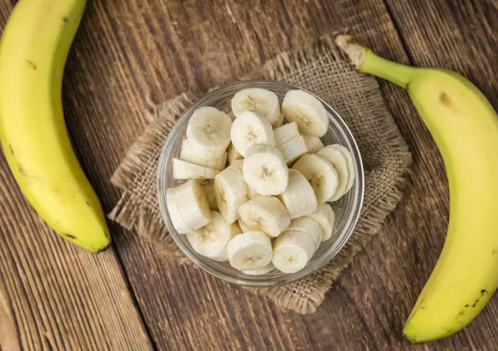

The Remarkable Health Benefits of Bananas
Bananas, often referred to as nature's perfect snack, are not just a tasty treat but also a powerhouse of nutrients. They come conveniently packaged in their own natural wrappers, making them a popular choice for on-the-go snacking. But did you know that bananas offer a wide array of health benefits too? In this blog post, we'll explore some of the incredible ways that bananas can contribute to your well-being.
Bananas are a nutritional treasure trove. They are an excellent source of essential vitamins and minerals, including vitamin C, vitamin B6, potassium, and dietary fiber. One medium-sized banana contains about 400 mg of potassium, a crucial mineral for maintaining proper heart and muscle function.
Bananas are heart-healthy. The high potassium content helps regulate blood pressure, reducing the risk of hypertension and stroke. Additionally, bananas are low in sodium, making them an ideal choice for maintaining a healthy cardiovascular system.
Bananas are a fantastic choice for a guilt-free snack. They are naturally low in calories, making them a great option for weight management. Their natural sweetness can also help satisfy sweet cravings without resorting to processed sugary snacks.
The vitamin C content in bananas contributes to healthy and glowing skin. It aids in collagen production, which is essential for skin elasticity and the prevention of premature aging. You can even use mashed bananas as a natural face mask for soft, smooth skin.
From providing essential nutrients and energy to supporting heart health, digestion, and mood enhancement, bananas are truly a versatile and beneficial fruit. Incorporating them into your daily diet can be a simple and delicious way to boost your overall well-being. So, the next time you grab a banana, savor not only its delightful taste but also the numerous health benefits it brings to your plate.
About the Author
Mae Bongoc is the visionary founder and driving force behind Happy Banana. With a deep passion for wholesome snacking and a love for all things banana, Mae embarked on a journey to share the joy of banana chips with the world. Her dedication to quality, creativity, and health-conscious choices has made Happy Banana a beloved brand, offering baked and fried banana chips that capture the essence of pure happiness in every bite. Mae's commitment to delivering delicious and nutritious snacks has earned her a special place in the hearts of banana chip enthusiasts everywhere.